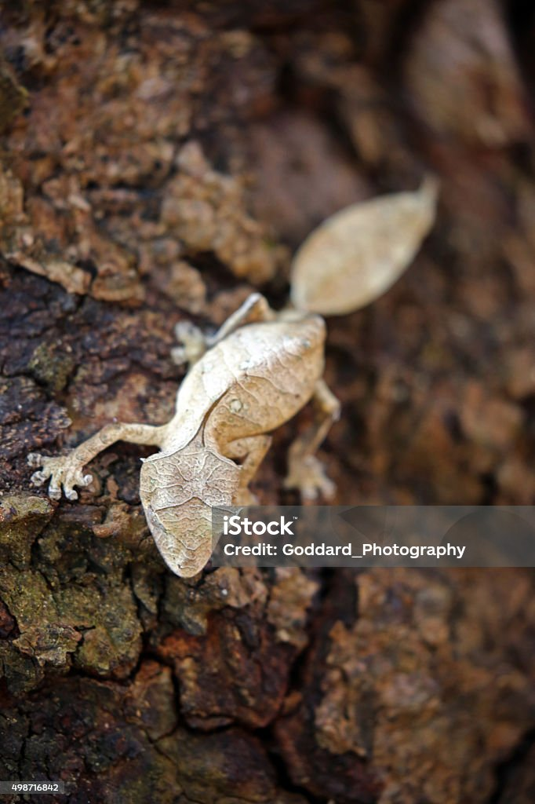

A levélfarkú gekkó Madagaszkáron élő különleges hüllő. Nevét onnan kapta, hogy farka és teste egy elszáradt levélre hasonlít, ezért nagyon jól tud rejtőzködni.
Nappal általában mozdulatlanul pihen a fakérgen, éjszaka pedig rovarokra és más apró állatokra vadászik. Tápláléka főként rovarokból és pókokból áll.
Ha álcázásról van szó, a levélfarkú gekkók profibbak a kaméleonoknál! Az állatka nappal a fakéreghez lapulva pihen, és testének szabálytalan körvonalával, terepszíneivel egészen beleolvad környezetébe, éjjel azonban az ágakon sétálva igyekszik megtölteni a bendőjét rovarokból és más gerinctelenekből álló zsákmányával.Valószínűleg a nappali órákban a sziklák zugaiban talál menedéket a száraz hőség elől, és éjszaka előjön rejtekhelyéről, hogy kisebb állatokra vadászhasson. Húsevő állat, tápláléka rovarokból, pókokból és más kis gekkókból is állhat, melyeket éjjel zsákmányol.
Vissza a főoldalra